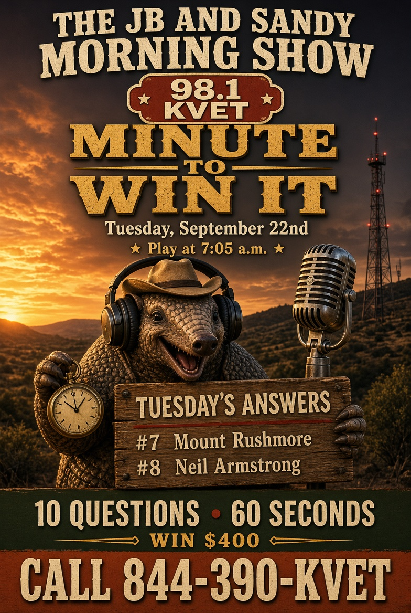
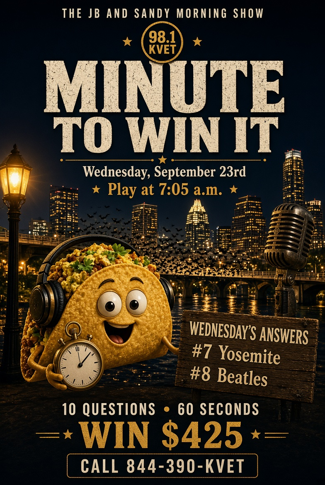
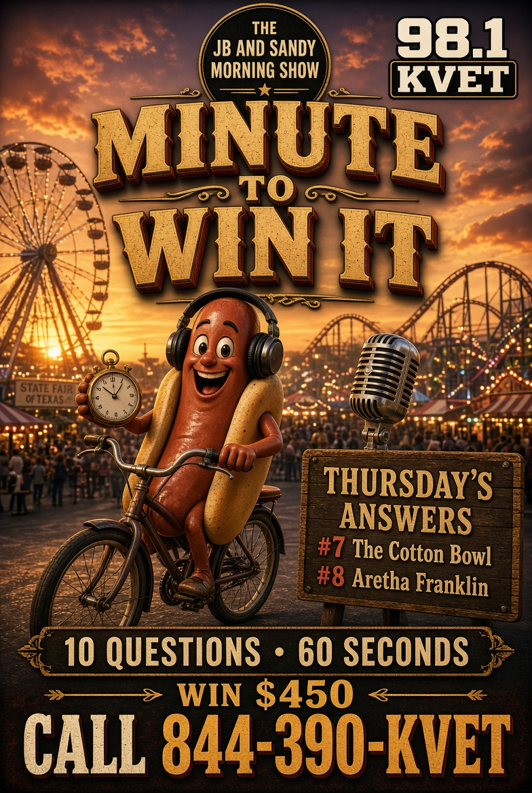
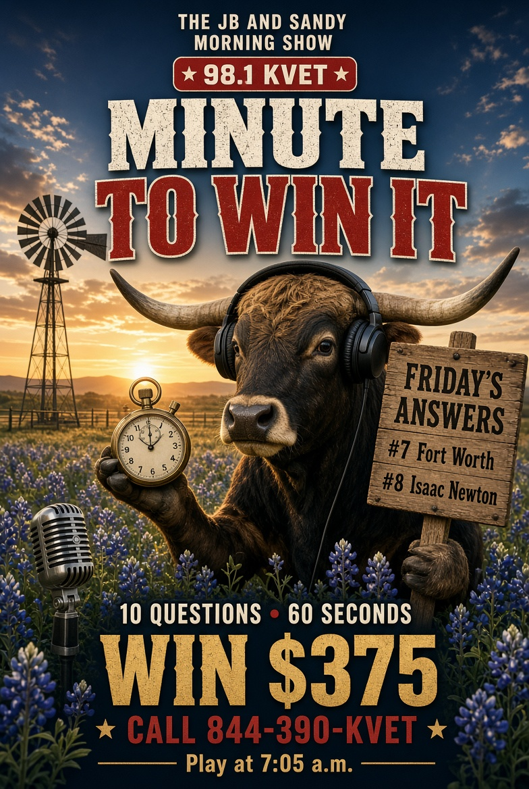

Minute To Win It — Sep 22–25 2026 (this packet)
Brand-new packet. Harder as you go. Posters are Q7 & Q8 only.
Tuesday — Tue Sep 22, 2026
Social card — answers 7 & 8. Download and post.
{kind=link}

Question 1: How many players are on the field for one football team at a time?
Answer: 11
Question 2: What do you call the metal part of a pencil that holds the eraser?
Answer: Ferrule
Question 3: Which Texas city is home to the Stockyards?
Answer: Fort Worth
Question 4: What board game uses properties, houses, and a thimble?
Answer: Monopoly
Question 5: Which country hosted the 1994 FIFA World Cup?
Answer: United States
Question 6: What is the name of the clock tower in London often called Big Ben (the bell)?
Answer: Elizabeth Tower / Big Ben is the bell
Question 7: Which South Dakota mountain has four presidents carved into it?
Answer: Mount Rushmore
Question 8: Who was the first person to walk on the moon?
Answer: Neil Armstrong
Question 9: What year did the first Super Bowl take place?
Answer: 1967
Question 10: What is the capital of New Zealand?
Answer: Wellington
Wednesday — Wed Sep 23, 2026
Social card — answers 7 & 8. Download and post.
{kind=link}

Question 1: How many strings are on a standard banjo that Earl Scruggs played (5-string)?
Answer: Five
Question 2: What do you call a baby goat?
Answer: Kid
Question 3: Which spice is made from the bark of a tree?
Answer: Cinnamon
Question 4: What NFL team plays in Green Bay?
Answer: Packers
Question 5: Which U.S. president is on the dime?
Answer: Franklin D. Roosevelt
Question 6: What is the name of the fairy in Peter Pan?
Answer: Tinker Bell
Question 7: Which California national park is famous for El Capitan and Half Dome?
Answer: Yosemite
Question 8: Which British band recorded “Hey Jude” and “Let It Be”?
Answer: The Beatles
Question 9: How many degrees are in a circle?
Answer: 360
Question 10: What is the largest island in the Mediterranean?
Answer: Sicily
Thursday — Thu Sep 24, 2026
Social card — answers 7 & 8. Download and post.
{kind=link}

Question 1: What do you call the dots on dice?
Answer: Pips
Question 2: How many lives is a cat said to have?
Answer: Nine
Question 3: Which Texas city hosts the State Fair of Texas?
Answer: Dallas
Question 4: What is the name of Dorothy’s dog in The Wizard of Oz?
Answer: Toto
Question 5: Which instrument does a drum major not usually play while marching?
Answer: Piano
Question 6: What is the chemical symbol for silver?
Answer: Ag
Question 7: In what Dallas stadium is the Red River Rivalry played?
Answer: The Cotton Bowl
Question 8: Who originally recorded “Respect” that Aretha made famous — no, who sang the hit version of “Respect”?
Answer: Aretha Franklin
Question 9: What year did the Berlin Wall go up?
Answer: 1961
Question 10: What is the capital of Norway?
Answer: Oslo
Friday — Fri Sep 25, 2026
Social card — answers 7 & 8. Download and post.
{kind=link}

Question 1: How many points is a safety worth in football?
Answer: Two
Question 2: What do you call a group of crows?
Answer: Murder
Question 3: Which Texas city is home to Space Center Houston?
Answer: Houston
Question 4: What fruit shares its name with a computer company?
Answer: Apple
Question 5: Which ocean liner sank in 1912 after hitting an iceberg?
Answer: Titanic
Question 6: What is the name of the bear in The Jungle Book?
Answer: Baloo
Question 7: Which Texas city is nicknamed Cowtown?
Answer: Fort Worth
Question 8: Who formulated the laws of motion and gravity after an apple story?
Answer: Isaac Newton
Question 9: How many chambers does a human heart have?
Answer: Four
Question 10: What is the capital of Finland?
Answer: Helsinki